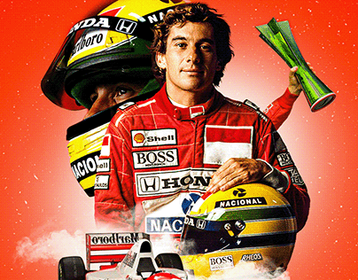

Ayrton Senna
Paulistano do bairro de Santana, Ayrton Senna nasceu com a velocidade correndo em suas veias. Incentivado pelo seu pai (Sr. Milton), aos 4 anos de idade já apresentava uma habilidade incrível com o Kart e, a partir disso, a paixão pelo barulho do motor acelerado só aumentou. O desenvolvimento de Senna como piloto parte de muita inspiração do então garoto, que dedicava inúmeras horas do seu dia em treinamentos. Em 1981, começou a competir na Europa, ganhando o campeonato inglês de Fórmula Ford 1600 - com uma marca de 12 vitórias em 20 corridas. Foi nesse período que decidiu usar o sobrenome de solteira de sua mãe, Senna, já que Silva é um nome muito comum no Brasil. Em 1983, venceu o campeonato inglês de Fórmula 3 pela equipe Dick Bennets, com 13 vitórias em 21 corridas, sendo 9 delas consecutivas. Triunfou também no Grande Prêmio de Macau pela Teddy Yip’s Theodore Racing Team. O piloto estava na sua melhor forma e em uma ascendente impressionante - absolutamente nada o tirava do foco que tinha.
A entrada do atleta na Fórmula 1 acontece em 1984 pela Tolleman, depois de atrair a atenção de diversas equipes. No seu terceiro GP, realizado na África do Sul, Senna marcou o primeiro ponto. Duas semanas depois, o resultado se repetiu no GP da Bélgica. A adversidade o encontrou no GP de San Marco, quando não conseguiu tempo suficiente - essa foi a únic vez que isso aconteceu em sua carreira, afinal Senna nasceu pra vencer. Foi nesse mesmo ano, durante o GP de Mônaco, que Ayrton, depois de conseguir se classificar em 13° no grid de largada, fez um progresso inimaginável pelas ruas de Monte Carlo chegando rapidamente ao terceiro lugar, mesmo com um carro muito inferiror aos demais. Durante a volta 19 conseguiu ultrapassar o supercampeão Niki Lauda, que estava em segundo, e, com isso, começou a ameçar o líder Alain Prost. Nesse ponto, chovia demais na pista e a corrida teve que ser interrompida por motivos de segurança. Senna havia passado Prost, mas a vitória não foi computada, já que nesses casos, se considerava a posição da volta anterior. Ainda assim, seu momento não foi apagado: ele havia impressionado. No mesmo ano, Senna conquistou mais dois pódios. Mudando de casa, Ayrton Senna inicia a temporada de 1985 na Lotus com a promessa de um ambiente mais promissor para sua carreira. O primeiro ano na equipe contou com vitórias e frustrações, já que sua máquina o fez abandonar a pista por problemas técnicos diversas vezes. Ainda assim, seu desempenho era impressionnte. Senna ficou conhecido como "Rei da Pole Position", devido aos seus tempos durante os treinos. Na nova casa, ele termina sua primeira temporda em quarto lugar. No ano de 1986, a Lotus escolhe o escocês Johnny Dumfries para ser parceiro de Senna. Essa temporada começa bem, conseguindo o segundo lugar no GP do Brasil. Percebendo a limitação do seu motor, ele adota uma técnica para adquirir vantagem: Adiando a troca de pneus. Com isso, passou a liderar o campeonato pela primeira vez, batendo inclusive o tempo da Williams de Nigel Mansel por 0,014s. Os problemas técnicos continuaram a atrapalhar o seu desempenho durante a temporada, e acabou terminando-a em quarto, mais uma vez. Inicia-se o ano de 1987 e a promessa de dias melhores. A Lotus vinha comum novo patrocinador e as possibilidades para Senna eram maiores. Circustâncias externas colocaram Ayrton em destaque após a saida de Mansel por ferimentos. Com a possibilidade de terminar a temporad em segundo lugar, o piloto se dedicou ao máximo e conquistou o objetivo almejado, mas seu carro não passou nas medições e Senna acabou amargurando um terceiro lugar. Estava na hora de mudar de casa e buscar o mundial.
Em 1988, Senna chega a MacLaren para disputar o campeonato ao lado de Prost, com quem desenvolveu um grande richa. Nesse ano a dupla venceu 15 das 16 corridas. Foi nesse ano que Ayrton chhegou no lugr mais alto do pódio, garantindo seu primeiro título mundial. No ano de 1989, a adversidade entre os pilotos se tornou uma guerra psicológica. Prost conuista o tri mundial no GP do Japão depois de uma colisão com o carro de Senna, que, inconformado, tenta recorrer, mas sem sucesso. O ano de 1990 chega e, no mesmo circuito, os dois estão disputando o título mundial, agora Prost na Ferrari. Dessa vez, uma colisão entre os carros dá vantagem para Senna, fazendo ele garantir o bicampeonato mundial. Em 1991, veio o tri. Uma ascedente impressionante continuava a acompanhar o piloto. O ano sequente, porém, acabou trazendo a tona a superioridade do motor da Willims. Problemas técnicos que abateram seu carro somados ao campeonato perfeito de Mansel tornaram o ano desestimulante para o piloto. Apesar de não acreditar na competitivide das máquinas da McLaren, a transferência de Senna para Williams seria impossível enquanto Prost fizesse parte da euipe. Depois de terminar em segundo lugar na corrida de abertura da temporada na Áfric do Sul, Senna ganhou os GPs do Brasil e da Europa, em Donington Park. Apesar disso, Senn terminou a temporada em segundo e garantiu passaporte para a Williams em 1994.
Senna desejava tanto fazer parte da Williams, que se ofereceu para correr sem receber, o que mesmo assim foi vetado. Quando percebeu as vias de contratação de Ayrton, Prost decidiu se retirar. Na melhor equipe, com o melhor motor, Senna era favorito ao campeonato. A pré-temporada mostrou um carro rápido, porém dificil de dirigir. O próprio Senna fez declarações de que o carro era instável e desajeitado. Seria um prenúncio do trágico acidente na Itália. Foi no GP de San Marino que Senna acelerou no que seria a a sua última corrida. Entrou na curva Tamburello. Perdeu o controle devido a uma barra de direção aos muros laterais e chocou-se violentamente. Nesse momento, toda nação brasileira prendeu a respiração, esperando qualquer movimento por parte do piloto. Um movimento leve aconteceu, mas piorou drasticamente seus danos cerebrais. Atendido prontmente na pista, foi transferido para o hospital, onde, poucas horas depois, foi declarado como morto. Era o fim do atleta e o começo de um legado.